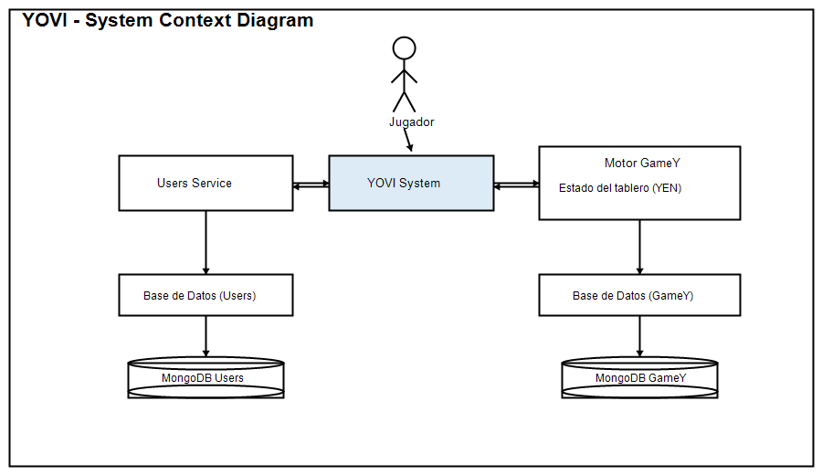
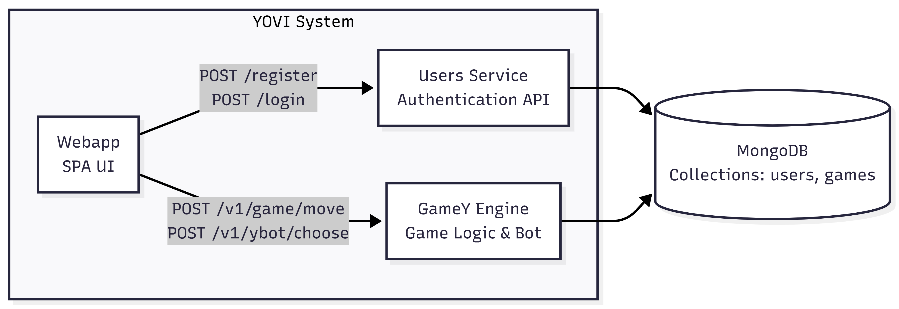
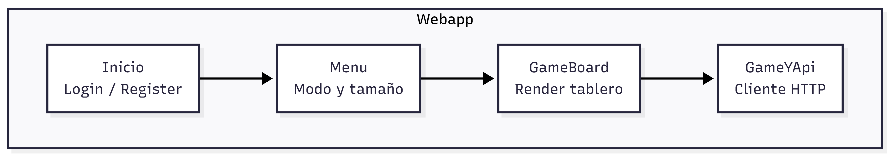
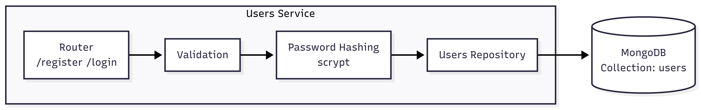
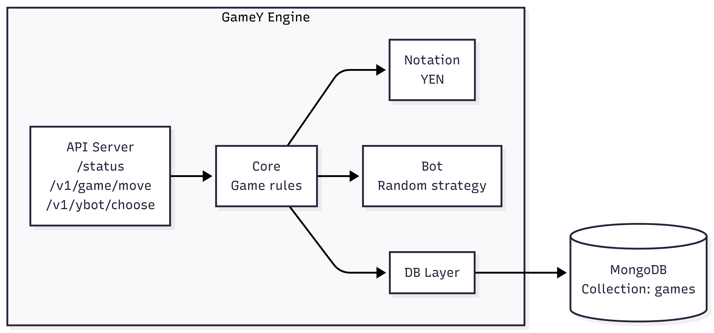

About arc42
arc42, the template for documentation of software and system architecture.
Template Version 8.2 EN. (based upon AsciiDoc version), January 2023
Created, maintained and © by Dr. Peter Hruschka, Dr. Gernot Starke and contributors. See https://arc42.org.
1. Introduction and Goals
1.1. Requirements Overview
El proyecto YOVI tiene como objetivo desarrollar una plataforma web que permita jugar al juego de tablero Y tanto a personas como a bots. El sistema busca mejorar la accesibilidad al juego, permitir la interacción automatizada mediante una API pública y ofrecer estadísticas e histórico de partidas a los usuarios registrados.
La solución estará compuesta por dos subsistemas principales:
-
Una aplicación web implementada en TypeScript que proporciona la interfaz de usuario, la gestión de usuarios y una API pública.
-
Un motor de juego implementado en Rust encargado de validar si una partida ha sido ganada y de sugerir el siguiente movimiento mediante distintas estrategias.
Ambos subsistemas se comunicarán mediante mensajes JSON utilizando la notación YEN para representar el estado del tablero.
Requisitos funcionales principales:
-
Los usuarios podrán registrarse y autenticarse en la plataforma.
-
Los jugadores podrán jugar al juego Y clásico contra la máquina.
-
La aplicación ofrecerá varias estrategias y niveles de dificultad.
-
El sistema almacenará estadísticas e histórico de partidas.
-
Se expondrá una API pública que permitirá a bots jugar partidas y gestionar información.
-
La aplicación estará desplegada y accesible a través de Internet.
1.2. Quality Goals
The top three (max five) quality goals for the architecture whose fulfillment is of highest importance to the major stakeholders. We really mean quality goals for the architecture. Don’t confuse them with project goals. They are not necessarily identical.
Consider this overview of potential topics (based upon the ISO 25010 standard):

You should know the quality goals of your most important stakeholders, since they will influence fundamental architectural decisions. Make sure to be very concrete about these qualities, avoid buzzwords. If you as an architect do not know how the quality of your work will be judged…
A table with quality goals and concrete scenarios, ordered by priorities
| Prioridad | Objetivo de calidad | Escenario |
|---|---|---|
1 |
Usabilidad |
Un usuario nuevo puede registrarse e iniciar una partida en menos de 2 minutos sin necesidad de documentación. |
2 |
Rendimiento |
El motor del juego devuelve la validación de una partida o el siguiente movimiento en menos de 1 segundo en condiciones normales. |
3 |
Escalabilidad |
La arquitectura permite soportar un incremento significativo de usuarios y llamadas a la API sin rediseños importantes. |
4 |
Mantenibilidad |
Se pueden añadir nuevas estrategias de juego sin modificar módulos existentes. |
5 |
Fiabilidad |
La validación de partidas produce resultados correctos y consistentes en todo momento. |
1.3. Stakeholders
| Role/Name | Contact | Expectations |
|---|---|---|
Estudiantes |
Richard Robin Roque del Rio, Luis Jose Remuñan Ovies, Enol Ruiz Barcala, Ikram El Mabrouk Morhnane, Omayma El Imami Gaada |
Equipo responsable del análisis, diseño, implementación y documentación del sistema. |
Usuarios |
Personas que usen la aplicación |
Experiencia de juego sencilla, rápida y acceso a estadísticas. |
Profesores |
José Emilio Labra, Pablo González, Celia Melendi Lavandera, Diego Martín Fernández |
Supervisión del proyecto y evaluación de la calidad técnica y documental. |
2. Architecture Constraints
2.1. Restricciones técnicas
| Restricción | Descripción |
|---|---|
Tecnologías obligatorias |
La aplicación web debe desarrollarse en TypeScript y el motor del juego en Rust. |
Comunicación entre subsistemas |
La comunicación entre la web y el motor se realizará mediante mensajes JSON. |
Notación del juego |
El estado de la partida se representará con la notación YEN. |
API pública |
Debe existir una API para que bots puedan interactuar y jugar. |
2.2. Restricciones organizativas
| Restricción | Descripción |
|---|---|
Trabajo en equipo |
El desarrollo se realiza en grupo y requiere coordinación y reparto de tareas. |
Repositorio |
El código y la documentación se gestionarán en un repositorio compartido. |
Documentación |
La documentación de arquitectura debe seguir el modelo arc42. |
2.3. Restricciones de despliegue
| Restricción | Descripción |
|---|---|
Accesibilidad |
La aplicación debe estar desplegada y accesible a través de Internet. |
Evaluación |
Se valorará funcionalidad, calidad de implementación y calidad de documentación. |
3. Context and Scope
Esta sección describe el contexto del sistema YOVI: su entorno, los actores externos con los que interactúa y las interfaces que delimitan su alcance.
A diferencia de Introduction and Goals, aquí no se detallan requisitos ni objetivos de calidad, sino las fronteras del sistema y su relación con el entorno.
3.1. Business Context
YOVI es una plataforma web para jugar al juego de tablero Y en modo local (dos jugadores en la misma pantalla) o contra un bot. El sistema integra interfaz de usuario, autenticación básica y la lógica del motor GameY.
Desde el punto de vista del negocio, YOVI se considera una caja negra que ofrece una experiencia de juego sencilla con registro y login.
Actores externos principales:
| Actor / Sistema externo | Inputs hacia YOVI | Outputs desde YOVI |
|---|---|---|
Jugador |
Credenciales (username y password), selección de modo/tamaño, movimientos |
Mensajes de login/registro, estado del tablero, resultado |
Motor GameY |
Estado del tablero en notación YEN y movimiento humano |
Movimiento del bot y estado actualizado |
Base de Datos (Users) |
Usuarios registrados (username + hash) |
Confirmación de alta o rechazo |
Base de Datos (GameY) |
Resultado final de la partida (winner, board_size, etc.) |
Confirmación de persistencia |
El jugador interactúa únicamente con la aplicación web. GameY no conoce al usuario ni a la interfaz gráfica; se limita a validar jugadas, calcular el movimiento del bot y devolver el nuevo estado. Las bases de datos almacenan usuarios y resultados finales, sin rankings ni estadísticas avanzadas en esta versión.
3.2. Context Diagram
El siguiente diagrama muestra el contexto del sistema YOVI y sus relaciones con los actores y sistemas externos:

3.3. Technical Context
Desde el punto de vista técnico, el sistema se compone de tres subsistemas independientes que se comunican por REST con mensajes JSON.
| Comunicación | Canal / Protocolo | Formato |
|---|---|---|
Webapp ↔ Users Service |
HTTP REST (puerto 3000) |
JSON |
Webapp ↔ GameY |
HTTP REST (puerto 4000) |
JSON (notación YEN) |
Users Service ↔ MongoDB |
Conexión directa (driver de BD) |
Documentos (users) |
GameY ↔ MongoDB |
Conexión directa (driver de BD) |
Documentos (games) |
La webapp corre en el navegador y es el punto de entrada único. Los servicios backend no exponen interfaz gráfica y se consumen por API.
Endpoints de GameY:
| Endpoint | Uso |
|---|---|
/status |
Health check del servicio |
/v1/ybot/choose/{bot_id} |
Devuelve la jugada del bot |
/v1/game/move |
Aplica una jugada humana y devuelve el nuevo estado |
Puertos de despliegue en Docker:
| Servicio | Puerto |
|---|---|
Webapp |
80 |
Users Service |
3000 |
GameY |
4000 |
3.4. Scope (Alcance)
El alcance de esta entrega es una prueba de concepto funcional para validar arquitectura e integración entre subsistemas.
Dentro del alcance:
-
Registro y login con validación básica (usuarios guardados como username + hash).
-
Modo local y modo contra bot.
-
Selección de tamaño de tablero y variante (standard / why_not).
-
Comunicación funcional Webapp ↔ Users Service y Webapp ↔ GameY.
-
Almacenamiento en BD del resultado final de la partida (persistido por GameY).
-
Aplicación accesible vía web.
Fuera del alcance (versiones futuras):
-
Rankings y estadísticas agregadas.
-
Histórico completo de movimientos y replays.
-
Múltiples niveles de dificultad del bot.
-
Multijugador en red entre personas.
Este alcance permite demostrar la viabilidad técnica y servir como base para futuras extensiones.
4. Solution Strategy
La estrategia de solucion de YOVI prioriza una arquitectura sencilla, modular y facil de evolucionar. La idea principal es separar claramente la interfaz de usuario, la gestion de usuarios y la logica del juego, de forma que cada parte pueda desarrollarse, probarse y desplegarse con bajo acoplamiento.
Esta decision responde a los objetivos de calidad definidos para el proyecto: una experiencia de uso directa para el jugador, tiempos de respuesta bajos en las operaciones del motor, facilidad para introducir cambios en nuevas funcionalidades y una base tecnica suficientemente flexible para crecer sin redisenar el sistema por completo.
4.1. Resumen de decisiones arquitectonicas
| Decision | Motivacion | Impacto esperado |
|---|---|---|
Separar interfaz, usuarios y motor de juego en subsistemas independientes |
Evitar acoplamiento excesivo entre presentacion, gestion de cuentas y reglas del dominio |
Mejora la mantenibilidad y facilita el despliegue y evolucion independientes |
Implementar la webapp con React, Vite y TypeScript |
Necesidad de una interfaz rapida de desarrollar, con buena experiencia interactiva y menor riesgo de errores de integracion |
Mayor productividad en frontend y mejor robustez en el contrato con las APIs |
Implementar el servicio de usuarios con Node.js y Express |
Resolver de forma sencilla la autenticacion y la exposicion de una API REST |
Backend ligero, comprensible y facil de integrar con la webapp |
Implementar GameY en Rust |
Aislar la logica critica del juego en un componente eficiente y fiable |
Mejor rendimiento y menor probabilidad de errores en la validacion de reglas |
Comunicar subsistemas mediante HTTP/REST y JSON |
Usar un contrato simple, interoperable y facil de depurar |
Menor acoplamiento tecnico y facilidad para probar integraciones |
Representar tableros con notacion YEN |
Disponer de un formato comun y compacto para intercambiar estados del juego |
Homogeneidad en la comunicacion entre cliente y motor |
Desplegar el sistema con Docker Compose |
Reducir diferencias entre entornos de desarrollo, prueba y demostracion |
Ejecucion reproducible y puesta en marcha mas simple para el equipo |
4.2. Decisiones tecnologicas clave
-
Webapp con React, Vite y TypeScript. Se elige una SPA ligera para ofrecer una interfaz rapida, con recarga agil durante el desarrollo y tipado estatico para reducir errores en la integracion con los servicios.
-
Servicio de usuarios con Node.js y Express. Esta tecnologia permite implementar una API REST pequena y comprensible, adecuada para operaciones CRUD, autenticacion basica e integracion rapida con la webapp.
-
Motor de juego en Rust. La logica de validacion de partidas y calculo de movimientos se aisla en un componente de alto rendimiento y comportamiento predecible, reduciendo el riesgo de errores en la parte mas sensible del dominio.
-
Intercambio de datos mediante JSON y notacion YEN. Se adopta un formato legible, portable y facil de depurar, que simplifica la comunicacion entre subsistemas y desacopla las implementaciones internas.
-
Despliegue local con Docker Compose. Se busca reproducibilidad del entorno y facilidad de puesta en marcha para desarrollo, pruebas y demostraciones.
-
Observabilidad basica con Prometheus y Grafana. Se introduce una base minima para inspeccionar el estado del sistema y detectar problemas de rendimiento o disponibilidad.
4.3. Descomposicion y patron arquitectonico
YOVI sigue una descomposicion por subsistemas con responsabilidades claras:
-
Webapp: punto de entrada del usuario, gestion de vistas, interaccion de juego y consumo de APIs.
-
Users service: gestion de registro, autenticacion y persistencia de informacion de usuarios.
-
GameY: motor encargado de aplicar reglas, validar estados y calcular jugadas.
La comunicacion entre componentes se realiza mediante HTTP/REST y mensajes JSON. Esta estrategia favorece el desacoplamiento, hace visibles los contratos entre modulos y permite sustituir o evolucionar un subsistema sin afectar de forma directa a los demas mientras se mantenga la interfaz publica.
Ademas, la persistencia se delega en los servicios backend en lugar de en la interfaz. Con ello, la webapp queda centrada en la experiencia de usuario y la logica de negocio permanece en los componentes que pueden validarla y protegerla mejor.
4.4. Estrategias para alcanzar los objetivos de calidad
-
Usabilidad. La webapp concentra todo el flujo de interaccion en una unica entrada, con navegacion sencilla y operaciones directas para registrarse, iniciar sesion y jugar.
-
Rendimiento. La logica computacional del juego se concentra en Rust y se expone mediante endpoints pequenos, minimizando procesamiento innecesario en la capa web.
-
Mantenibilidad. La separacion por responsabilidades evita mezclar interfaz, autenticacion y reglas del juego, lo que facilita localizar cambios y ampliar el sistema.
-
Escalabilidad. La independencia de despliegue permite dimensionar por separado los subsistemas que reciban mas carga, especialmente el motor de juego o los servicios de usuario.
-
Fiabilidad. La validacion de reglas se centraliza en un unico motor, evitando inconsistencias derivadas de duplicar logica entre cliente y servidor.
4.5. Decisiones organizativas y de desarrollo
-
Mono-repo por subsistemas. El repositorio agrupa codigo y documentacion en una unica estructura, lo que simplifica la coordinacion del equipo y la trazabilidad entre decisiones de arquitectura e implementacion.
-
Documentacion arc42. Se utiliza una estructura documental estandar para justificar decisiones y mantener alineados requisitos, contexto, estrategia y despliegue.
-
Integracion continua y pruebas automatizadas. La estrategia de desarrollo busca validar cambios de forma temprana mediante builds, tests y comprobaciones de integracion.
-
Contenerizacion como base comun de trabajo. Todos los miembros del equipo comparten una forma consistente de ejecutar el sistema, reduciendo diferencias entre entornos.
5. Building Block View
5.1. Whitebox Overall System
Overview Diagram

- Motivation
-
La descomposición separa claramente interfaz, servicios y persistencia. Esto facilita mantener el sistema, probar cada parte por separado y evolucionar cada bloque sin afectar al resto.
- Contained Building Blocks
| Name | Responsibility |
|---|---|
Webapp |
Aplicación SPA. Gestiona pantallas, estado de juego en cliente y coordinación de llamadas a APIs. |
Users Service |
Servicio de autenticación. Registra usuarios, valida credenciales y devuelve respuestas de login/registro. |
GameY Engine |
Motor del juego Y. Aplica reglas, valida jugadas y ofrece endpoints de bot y movimiento. |
MongoDB |
Persistencia común con dos colecciones: |
- Important Interfaces
-
Las interfaces clave se describen en el nivel 2.
5.2. Level 2
5.2.1. White Box Webapp
Diagram

- Responsibility
-
Controla el flujo de usuario (inicio → menú → partida), renderiza el tablero y coordina la comunicación con los servicios.
- Contained Building Blocks
| Component | Responsibility |
|---|---|
App.tsx |
Orquesta las vistas principales. |
RegisterForm.tsx |
Login/registro y validaciones en cliente. |
Menu.tsx |
Selección de modo, tamaño y variante. |
GameBoard.tsx |
Render del tablero y control de turnos. |
GameyApi.ts |
Cliente HTTP hacia GameY. |
5.2.2. White Box Users Service
Diagram

- Responsibility
-
API de autenticación. Verifica entradas, genera hash de contraseñas y persiste usuarios en MongoDB.
- Contained Building Blocks
| Module | Responsibility |
|---|---|
users-service.js |
Endpoints |
openapi.yaml |
Contrato de API. |
5.2.3. White Box GameY Engine
Diagram

- Responsibility
-
Motor de reglas del juego. Recibe el estado (YEN), valida jugadas y devuelve el nuevo estado, además del movimiento del bot.
- Contained Building Blocks
| Module | Responsibility |
|---|---|
core/ |
Estado del juego, reglas y validación. |
notation/ |
Conversión a/desde YEN. |
bot/ |
Estrategias de bot (random). |
bot_server/ |
Endpoints HTTP. |
db/ |
Persistencia de resultados finales. |
5.3. Level 3
No se requiere más detalle en esta versión.
6. Runtime View
6.1. Inicialización de la Partida (Juego Y)
-
En este escenario, dos jugadores se emparejan y el sistema inicializa el tablero triangular de hexágonos para comenzar la partida por turnos.
-
Aspectos notables de la interacción: El servidor debe crear la estructura de datos que represente la cuadrícula hexagonal con forma de triángulo, asegurar que todas las celdas estén vacías, asignar los colores (Rojo y Azul) a los jugadores y notificar a ambos quién tiene el primer turno.
6.2. Colocación de Ficha (Validación de Turno)
-
Este escenario describe el flujo de comunicación cuando un jugador intenta colocar una de sus fichas en el tablero.
-
Aspectos notables de la interacción: El sistema (Building Block: Motor del Juego) actúa como árbitro. Debe validar que la petición proviene del jugador que tiene el turno activo, que las coordenadas del hexágono solicitado existen dentro de los límites del triángulo, y que el hexágono no está previamente ocupado por una ficha roja o azul.
6.3. Detección de Condición de Victoria (Conexión de Paredes)
-
Después de cada turno válido, el sistema evalúa si la ficha recién colocada completa un camino que conecta una pared del triángulo con otra.
-
Aspectos notables de la interacción: Esta es la lógica de negocio más pesada. El motor delega en un servicio de búsqueda (Pathfinding) que, usando algoritmos de grafos (como DFS o BFS adaptados a la adyacencia hexagonal), comprueba la conectividad del grupo de fichas del color del jugador actual. Si hay conexión de bordes, se emite el evento de fin de partida.
7. Deployment View
7.1. Infrastructure Level 1
<Overview Diagram>
- Motivation
-
<explanation in text form>
- Quality and/or Performance Features
-
<explanation in text form>
- Mapping of Building Blocks to Infrastructure
-
<description of the mapping>
7.2. Infrastructure Level 2
7.2.1. <Infrastructure Element 1>
<diagram + explanation>
7.2.2. <Infrastructure Element 2>
<diagram + explanation>
…
7.2.3. <Infrastructure Element n>
<diagram + explanation>
8. Cross-cutting Concepts
This section describes overall, principal regulations and solution ideas that are relevant in multiple parts (= cross-cutting) of your system. Such concepts are often related to multiple building blocks. They can include many different topics, such as
-
models, especially domain models
-
architecture or design patterns
-
rules for using specific technology
-
principal, often technical decisions of an overarching (= cross-cutting) nature
-
implementation rules
Concepts form the basis for conceptual integrity (consistency, homogeneity) of the architecture. Thus, they are an important contribution to achieve inner qualities of your system.
Some of these concepts cannot be assigned to individual building blocks, e.g. security or safety.
The form can be varied:
-
concept papers with any kind of structure
-
cross-cutting model excerpts or scenarios using notations of the architecture views
-
sample implementations, especially for technical concepts
-
reference to typical usage of standard frameworks (e.g. using Hibernate for object/relational mapping)
A potential (but not mandatory) structure for this section could be:
-
Domain concepts
-
User Experience concepts (UX)
-
Safety and security concepts
-
Architecture and design patterns
-
"Under-the-hood"
-
development concepts
-
operational concepts
Note: it might be difficult to assign individual concepts to one specific topic on this list.

See Concepts in the arc42 documentation.
8.1. <Concept 1>
<explanation>
8.2. <Concept 2>
<explanation>
…
8.3. <Concept n>
<explanation>
9. Architecture Decisions
En esta sección se documentan las decisiones arquitectónicas más relevantes tomadas en el proyecto YOVI. Cada decisión incluye su contexto, las alternativas consideradas, la decisión adoptada y sus consecuencias.
Las decisiones aquí recogidas afectan a la estructura global del sistema, su mantenibilidad, rendimiento y escalabilidad.
9.1. ADR-01: Separación en dos subsistemas (Web + Motor en Rust)
9.1.1. Estado
Aceptada
9.1.2. Contexto
El sistema YOVI debe ofrecer:
-
Interfaz web para usuarios.
-
API pública para bots.
-
Validación eficiente de partidas.
-
Cálculo del siguiente movimiento con distintas estrategias.
El motor requiere alto rendimiento y eficiencia computacional.
9.1.3. Decisión
Dividir el sistema en dos subsistemas principales:
-
Aplicación web en TypeScript (interfaz, gestión de usuarios y API).
-
Motor de juego independiente implementado en Rust.
Ambos subsistemas se comunicarán mediante mensajes JSON utilizando la notación YEN.
9.1.4. Alternativas consideradas
-
Implementar todo el sistema en TypeScript.
-
Implementar todo el sistema en Rust.
-
Arquitectura separada (TypeScript + Rust).
9.1.5. Justificación
-
Rust ofrece mayor rendimiento y seguridad para el motor.
-
TypeScript facilita el desarrollo web y la integración frontend.
-
Separación clara de responsabilidades.
9.1.6. Consecuencias
Positivas: - Mejor rendimiento del motor. - Alta modularidad. - Posibilidad de reutilizar el motor en otros entornos.
Negativas: - Mayor complejidad de integración. - Necesidad de mantener un contrato estable de comunicación.
9.2. ADR-02: Comunicación mediante JSON usando notación YEN
9.2.1. Estado
Aceptada
9.2.2. Contexto
Se necesita un formato estándar para representar:
-
Estado del tablero.
-
Movimientos.
-
Resultados de validación.
-
Interacción con la API pública.
9.2.3. Decisión
Usar mensajes JSON para la comunicación entre subsistemas, empleando la notación YEN para representar el tablero.
9.2.4. Alternativas consideradas
-
Comunicación binaria personalizada.
-
Uso de XML o Protobuf.
-
JSON + YEN.
9.2.5. Justificación
-
JSON es ampliamente soportado.
-
Facil integración con la API pública.
-
YEN representa el tablero de forma compacta y estándar.
9.2.6. Consecuencias
Positivas: - Interoperabilidad. - Facilidad para bots externos. - Bajo acoplamiento tecnológico.
Negativas: - Ligero overhead respecto a formatos binarios. - Necesidad de validar los mensajes.
9.3. ADR-03: Exposición de una API pública para bots
9.3.1. Estado
Aceptada
9.3.2. Contexto
Uno de los objetivos del proyecto es permitir la interacción automatizada mediante bots externos.
9.3.3. Decisión
Diseñar una API REST pública que permita:
-
Iniciar partidas.
-
Realizar movimientos.
-
Consultar estado.
-
Acceder a estadísticas.
9.3.4. Alternativas consideradas
-
No exponer API pública.
-
API privada solo interna.
-
API REST pública documentada.
9.3.5. Justificación
-
Cumple un objetivo principal del proyecto.
-
Permite integraciones futuras.
-
Facilita pruebas automatizadas.
9.3.6. Consecuencias
Positivas: - Extensibilidad funcional. - Integración con terceros.
Negativas: - Necesidad de autenticación y control de uso. - Mayor superficie de ataque.
9.4. ADR-04: Persistencia de estadísticas e histórico de partidas
9.4.1. Estado
Aceptada
9.4.2. Contexto
El sistema debe almacenar:
-
Usuarios registrados.
-
Historial de partidas.
-
Estadísticas acumuladas.
9.4.3. Decisión
Incorporar un sistema de persistencia para almacenar la información.
9.4.4. Alternativas consideradas
-
No almacenar histórico.
-
Ficheros planos.
-
Base de datos.
9.4.5. Justificación
-
Necesidad de consultas estructuradas.
-
Mejora de experiencia de usuario.
-
Soporte para escalabilidad futura.
9.4.6. Consecuencias
Positivas: - Acceso rápido a información histórica. - Posibilidad de análisis estadístico.
Negativas: - Mayor complejidad operativa. - Necesidad de copias de seguridad.
9.5. ADR-05: Diseño modular para permitir nuevas estrategias
9.5.1. Estado
Aceptada
9.5.2. Contexto
El sistema debe permitir añadir nuevas estrategias sin modificar los módulos existentes.
9.5.3. Decisión
Diseñar el motor siguiendo el principio:
-
Abierto para extensión.
-
Cerrado para modificación.
Las estrategias se implementarán como módulos intercambiables.
9.5.4. Alternativas consideradas
-
Estrategias dentro de un único módulo.
-
Patrón estrategia / módulos intercambiables.
-
Motor configurable por scripts externos.
9.5.5. Justificación
-
Cumple el objetivo de mantenibilidad.
-
Reduce riesgo de errores al añadir nuevas estrategias.
9.5.6. Consecuencias
Positivas: - Extensibilidad sencilla. - Código más organizado.
Negativas: - Mayor esfuerzo inicial de diseño. - Ligera complejidad estructural.
9.6. ADR-06: Uso de MongoDB Atlas como sistema de persistencia
9.6.1. Estado
Aceptada
9.6.2. Contexto
El sistema YOVI necesita almacenar:
-
Usuarios registrados.
-
Historial de partidas.
-
Estadísticas.
-
Estados de tablero representados en formato JSON/YEN.
Se requiere además:
-
Accceso seguro desde Internet.
-
Alta disponibilidad del servicio.
-
Copias de seguridad automáticas.
-
Escalabilidad sin administrar infraestructura propia.
9.6.3. Decisión
Utilizar MongoDB Atlas como servicio gestionado en la nube para la persistencia de datos del sistema.
9.6.4. Alternativas consideradas
-
Base de datos relacional autogestionada (PostgreSQL/MySQL).
-
MongoDB autogestionado en un servidor propio.
-
MongoDB Atlas (servicio cloud gestionado).
9.6.5. Justificación
-
El estado del tablero y las partidas se representan naturalmente como documentos JSON.
-
Permite estructuras flexibles sin migraciones complejas.
-
Atlas elimina la necesidad de administrar servidores y mantenimiento.
-
Proporciona copias de seguridad automáticas y alta disponibilidad.
-
Permite escalar recursos fácilmente según la demanda.
-
Ofrece acceso seguro mediante autenticación y control de red.
-
Integración sencilla con aplicaciones web.
9.6.6. Consecuencias
Positivas: - Alta disponibilidad y fiabilidad. - Escalabilidad sencilla. - Backups automáticos. - Reducción de carga operativa del equipo. - Acceso remoto seguro.
Negativas: - Dependencia de un servicio externo. - Posibles costes al aumentar el uso. - Requiere correcta configuración de seguridad y accesos.
9.7. ADR-07: Uso de AWS como infraestructura de despliegue
9.7.1. Estado
Aceptada
9.7.2. Contexto
El sistema YOVI necesita:
-
Hospedar la aplicación web.
-
Ejecutar el motor en Rust.
-
Exponer la API pública a Internet.
-
Garantizar disponibilidad y escalabilidad.
-
Permitir despliegues reproducibles.
-
Separar entornos (desarrollo, pruebas, producción).
Se requiere además:
-
Infraestructura fiable y ampliamente soportada.
-
Posibilidad de escalar horizontalmente.
-
Integración con servicios gestionados.
9.7.3. Decisión
Utilizar Amazon Web Services (AWS) como proveedor de infraestructura para desplegar los componentes del sistema.
La arquitectura se desplegará sobre servicios cloud gestionados, permitiendo:
-
Servidores virtuales (EC2) o contenedores.
-
Balanceo de carga.
-
Configuración de red segura.
-
Escalado automático.
-
Integración con MongoDB Atlas y otros servicios externos.
9.7.4. Alternativas consideradas
-
Otros proveedores cloud (Azure).
-
Otros proveedores cloud (Google Cloud).
9.7.5. Justificación
-
AWS ofrece alta disponibilidad global.
-
Amplio ecosistema de servicios.
-
Escalabilidad bajo demanda.
-
Buen soporte para arquitecturas distribuidas.
-
Integración sencilla con despliegues modernos (CI/CD, contenedores).
-
El equipo ya ha trabajado previamente con Azure en otros proyectos, por lo que adoptar AWS amplía la experiencia en entornos multi-cloud.
9.7.6. Consecuencias
Positivas: - Alta disponibilidad. - Escalabilidad horizontal. - Infraestructura flexible. - Separación clara de entornos. - Soporte para automatización de despliegues.
Negativas: - Dependencia de proveedor externo. - Costes variables según uso. - Necesidad de configurar correctamente seguridad (IAM, redes, firewall).
10. Quality Requirements
10.1. Quality Tree
10.2. Quality Scenarios
11. Risks and Technical Debts
12. Glossary
| Term | Definition |
|---|---|
<Term-1> |
<definition-1> |
<Term-2> |
<definition-2> |